ReST：用推荐原生设计扩展工业排序序列 Transformer
这篇论文是字节跳动团队对工业广告排序中“行为序列该如何真正做大”的一次系统回答。论文题为 From Language to Behavior: Scaling Sequence Transformers for Industrial Recommendation Ranking with Rec-Native Designs，作者为 Jie Chen、Xiangqian Yu、Yanchao Lian、Tan Lu、Run Yang、Zhengchun Shang、Xing Wang、Cheng Chen、Ke Hu、Qiang Li、Tianjiu Yin 和 Xiaobing Liu，第一作者主机构及全部作者机构均为 ByteDance。论文于 2026 年 9 月 1 日公开，唯一入口为 arXiv:2609.01240。本轮未核验到独立官方代码仓库或项目页。
ReST 不是把现有 LLM block 原样塞进排序模型，而是把工业排序特有的信号、监督和计算结构当作设计起点：先用推荐原生序列编码器处理长行为历史，再用轻量候选解码器完成一对多打分；训练侧用辅助目标补足序列梯度，系统侧用共享前缀把架构上的可复用边界落实成吞吐和延迟收益。
工业排序中的行为序列包含偶然点击、探索性浏览等噪声，行为间物理时间不规则，监督又稀疏；与此同时，一份用户历史要在严格延迟预算内与大量候选逐一交互。直接移植语言模型 Transformer 会同时遭遇序列信号利用不足、深度扩展饱和和共享历史被重复计算的问题。
1. 背景和问题
1.1 “扩大 Transformer”为什么没有自然变成“扩大推荐收益”
语言模型的缩放经验建立在相对规整的 token 序列与密集 next-token 监督上：每个位置都贡献训练信号，位置通常由离散顺序表达，模型加深、加宽或延长上下文时，新增容量有持续被优化的机会。工业推荐排序的输入表面上也是序列，统计结构却不同。一次点击或浏览只是隐式反馈，既可能代表稳定偏好，也可能来自曝光偏差、误触或短暂探索；两个相邻行为可能只隔几秒，也可能相隔数日。把它们当成质量相当、距离相等的语言 token，会使注意力把不可靠证据和真实兴趣一起聚合，纯序号位置也无法表达多尺度的时间衰减。
更棘手的是监督密度。工业 CVR 模型往往把行为序列分支与强大的非序列 DLRM 分支合并，后者拥有用户、上下文、广告以及大量记忆性特征。主 BCE 损失可以沿非序列捷径快速下降，序列编码器即使包含有用的长期意图，也可能只收到微弱、间接的梯度。作者把这种现象称为 sequence starvation：不是历史中没有信息，而是主目标不必依赖这条路径就能得到不错的训练损失。序列模块越大，弱监督越难覆盖新增参数，因此 LLaMA 风格 block 的长度、深度和宽度扩展很快出现边际收益递减。
已有推荐模型各自覆盖了局部问题。DIN、STCA 做目标感知的历史交互，SIM/SDIM 通过检索近似处理长行为，HSTU 证明生成式推荐中的序列扩展潜力；OneTrans、InterFormer、RankMixer 等则强化序列与稠密特征的联合交互。但 ReST 关注的是另一条边界：在判别式工业排序里，怎样把行为序列本身变成主要、可复用的扩展轴，而不让候选侧重复计算吞掉 P99 延迟。这个问题同时需要模型结构、训练目标和服务系统的协同，单独换一种 attention 或简单增加参数都不够。
1.2 一份历史、许多候选所造成的计算非对称
对用户 $u$，论文把历史写成 $S_u=[(s_1,t_1),\ldots,(s_L,t_L)]$，其中 $s_i$ 是第 $i$ 次交互的特征，$t_i$ 是物理时间戳；$\mathbf u_d$ 表示非序列用户与上下文特征，$a$ 是候选广告。排序任务预测：
符号解释：$\hat y$ 是候选发生转化的估计概率，$y\in\{0,1\}$ 是二元标签，$f_\theta$ 同时读取行为序列、非序列特征与候选信息，主目标 $\mathcal L_{ce}$ 是数据集上的 BCE 期望。这一定义保留生产排名栈和候选打分协议，只重新设计序列建模部分，因此论文报告的增益不是更换整个业务目标所得。
一个请求通常包含 $N$ 个候选，但只有一份用户历史。对历史的深层自注意力可以在候选间摊销，候选条件交互却必须执行 $N$ 次。decoder-only Transformer 把两种角色放进同一堆 block，导致共享计算和候选计算一起膨胀；如果为控制延迟而限制整堆网络，又会把最值得扩大的序列侧容量一并压小。ReST 的核心判断是：**参数容量不必与每候选激活 FLOPs 同步增长，也不应让一次可共享的行为理解被重复 $N$ 次。**因此它把重型编码器与轻型交叉解码器拆开，让训练、缓存和批处理都围绕这一边界设计。
1.3 论文要同时回答的五个问题
实验并非只问“离线 AUC 是否更高”，而是围绕五个问题展开：在相同生产 FLOPs 预算下能否超过 DIN、STCA、LLaMA、HSTU 和现代 encoder-decoder；长度、深度、宽度是否都能继续扩展；每个 rec-native 组件究竟贡献多少；共享前缀训练与服务是否带来端到端效率；最后，模型能否在 50 ms P99 预算内改善线上业务指标。这样的证据链很重要，因为工业大模型常见的失败模式是离线参数规模可增长、线上候选吞吐却不可承受，或者业务指标上涨但无法定位来自架构、训练还是系统优化。ReST 试图用模块消融、三轴 scaling、训练梯度、噪声注入、公开基准和生产 A/B 把这些层次分开。
从业务链路看，这一研究还刻意不改变候选生成、非序列特征塔和最终判别协议，使序列模块的替换更接近可控线上实验。这样做牺牲了端到端联合生成的想象空间，却换来更明确的归因：如果相同候选和主要排名栈下出现收益，就能进一步追问是历史去噪、时间建模、序列监督还是计算复用起作用，而不是把所有变化混成一个新系统。对于需要灰度部署的大规模广告排序，这种可分解性本身就是方法设计的一部分。
2. 方法
2.1 推荐原生序列编码器：DGA、RoPE+RoTE 与 SRN
ReST 把一次请求拆成重型序列编码器 $T$ 与轻型交叉解码器 $C$。$T$ 从 LLaMA 风格的因果自注意力和 SwiGLU FFN 出发，却针对行为噪声、非均匀时间与稀疏监督加入三项设计；其输出 $H=T(S_u)$ 是可复用记忆。$C$ 用 [CLS]、context、user、ad 四类语义 query token 读取 $H$，产生候选条件表示。关键不是 encoder-decoder 这个名字，而是把“可以按用户一次计算的重活”与“必须按候选重复的轻活”建立清晰计算边界。
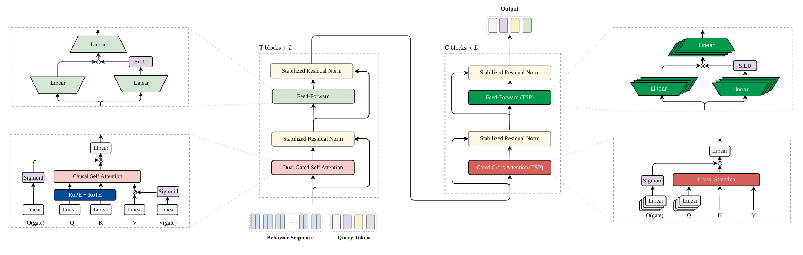
Figure 1 左半部分是 $T$：每层先经 Dual-Gated Self Attention，再经 FFN，两条残差路径都使用 SRN；注意力的 $Q/K$ 同时接收 RoPE 与 RoTE，$V$ 和聚合输出分别受 sigmoid 门控制。右半部分是 $C$：cross attention 直接把编码器记忆当作 $K/V$，只对 query 做投影，并为不同 query token 激活各自参数；这解释了图中多叠层参数与少量实际计算可以共存。中央行为序列只进入 $T$ 一次，多个候选 token 在右侧复用相同记忆。训练时图中的辅助头会增强序列信号，部署时只留下 $T+C$ 主路径。因而这张图不仅是网络结构示意，也明确了缓存粒度、重复计算位置和模型容量应该投向哪里。
Dual-Gated Attention（DGA）先过滤输入 value，再控制聚合后上下文对 token 的更新。这样把噪声影响拆成两个时刻：不可靠行为不应进入任何上下文，而即使聚合结果合理，也未必值得在每个位置等强写回。给定 $X\in\mathbb R^{L\times d}$：
符号解释：$W_Q,W_K,W_V$ 是标准注意力投影，$W_{g_v}$ 产生 value gate，$W_{g_o}$ 产生 output gate，$W_o$ 是输出投影，$\sigma$ 是有界 sigmoid，$\odot$ 为逐元素乘。value gate 在聚合发生前压低不可靠行为，输出门再决定聚合历史应以多大幅度更新当前位置；两级门分别回答“这个行为值可信不可信”和“这份上下文现在有多有用”。作者不用 HSTU 的无界 SiLU 门，是因为后者在规模增大时出现 attention output 发散风险；DGA 比无门控增加约 7.5% FLOPs，但比同时门控 Q/K/V 的 14.9% 更节制。
RoTE 则把不规则物理时间放进与 RoPE 相同的旋转形式。时间戳先平移为 $\tilde t_i=t_i-t_1$，再按每个 attention head 的粒度 $\tau_h$ 离散成 $b_i=\lfloor\tilde t_i/\tau_h\rfloor$：
符号解释：$\mathcal H_{pos}$ 的 head 按序号 $n,m$ 使用 RoPE，$\mathcal H_{time}$ 的 head 按时间桶 $b_n,b_m$ 使用 RoTE，$R_\Theta$ 是块对角旋转矩阵。由于 $R_\Theta(x)^\top=R_\Theta(-x)$ 且旋转可加，平移序列起点不会改变两行为的相对桶差。工业实现保留一个 RoPE head，其余 head 使用秒、分钟、小时、天、周、季度和年粒度。这个推导只证明对绝对时间原点不敏感，不代表 score 随时间差单调；旋转具有周期性，同一桶内事件也会被刻意视为相同时间位置。
为让深层 $T$ 能在稀疏监督下稳定优化，SRN 结合深度相关的 LN 位置与小尺度残差：
符号解释：$\operatorname{SubLayer}$ 是 attention 或 FFN，$L_{\mathrm{switch}}$ 约为总深度的 25%，每层 $\alpha_l$ 初始化为 0.01。浅层采用类似 Post-LN 的形式调节反向梯度，深层转为 Pre-LN 路径；小 $\alpha_l$ 让初始深网接近恒等映射，随着序列信号被学到再逐步放大残差更新。这不是额外推理分支，而是训练稳定性与深度收益的结构条件。
2.2 轻量交叉解码器：PF-KV 与 token-specific parameterization
候选侧解码器每个请求要执行 $N$ 次，因此 ReST 直接使用已上下文化的 $H$ 作为 key 与 value，删除候选侧 $W_K$、$W_V$ 和 value gate：
符号解释：$Z$ 是候选语义 query tokens，$H$ 同时充当 $K$ 与 $V$，$d_h$ 是 head 维度；第二行的 $i$ 表示 query token 类型，$W_i$ 是该类型在 $W_Q$、output gate 或 FFN 中的独立参数。PF-KV 省去每候选重复的 K/V 投影，Table 3 显示它把 cross decoder 的 FLOPs 增量从 6.7% 压到 0.2%；TSP 又让一次前向只激活当前 token 的参数，不带 TSP 的 $C$ 增益为 0.03%，完整 $C$ 为 0.05%。前提是 $H$ 已充分上下文化，否则省去 K/V 变换可能损失跨空间适配能力；而较小的 TSP 边际也说明主要收益并非简单堆候选侧参数。
2.3 辅助监督：直接序列 CVR 与跨分支对齐
第一条训练期支路只读取序列条件 query states $H_{seq}$ 与候选 $a$，明确禁止借用非序列用户/上下文特征：
符号解释：$g_{seq}$ 是轻量辅助 CVR 头，$\hat y_{seq}$ 必须依靠行为序列解释转化标签。它并不取代主预测头，而是为 $T$ 建立无法被 DLRM 捷径绕开的直接梯度通道；推理时整个辅助头删除，线上成本不变。这里仍保留独立公式块，是因为 Figure 2 直接监控的正是这条损失带来的梯度变化。
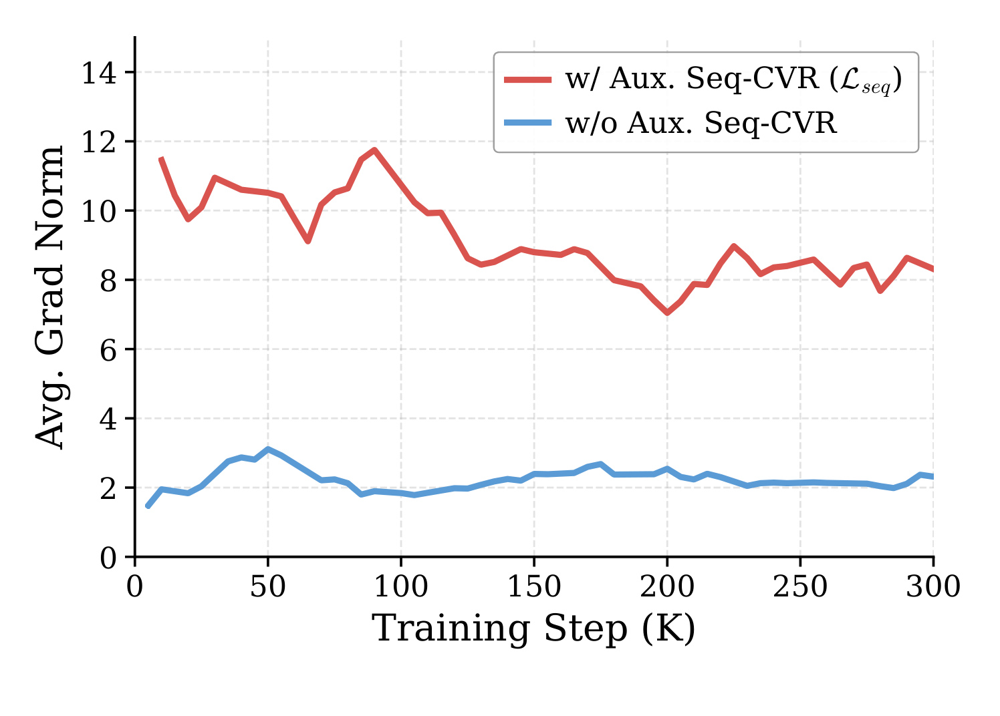
Figure 2 监控所有 encoder attention 层 $Q/K/V$ 投影矩阵的平均梯度范数。没有 $\mathcal L_{seq}$ 时，蓝线大部分训练阶段在约 2 附近；加入仅 0.1 权重的辅助目标后，红线长期处于约 7-12，论文汇总值从 2.35 增至 8.50，超过三倍。曲线证明 sequence starvation 不是抽象叙述：主 CVR 确实让序列栈收到更弱更新，而直接序列监督显著改变了优化强度。它仍不能单独证明更大梯度必然更好，因而要与 Table 4 的最终 AUC 消融合看；作者也报告 FFN 参数出现类似趋势，说明效果不只局限在被监控的 attention 投影。
第二条支路把序列 [CLS] 表示与非序列用户表示分别经过两层 MLP 和 $\ell_2$ 归一化，形成 $z_{seq}$ 与 $z_{ns}$，再与完整目标合写为：
符号解释：同一用户的序列/非序列配对令 $y_{ij}=+1$，不同用户为 $-1$，$\tau$ 是可学习正温度，$b$ 是可学习偏置，$B$ 是 batch size；$\mathcal L_{ce}$ 为生产主任务，$\lambda_{seq}$ 与 $\lambda_{align}$ 控制两项辅助信号。sigmoid 对比损失降低了对 batch size 的敏感性，但非序列分支若含曝光或记忆偏差，对齐也可能传播偏差。训练结束后 $g_{seq}$ 和两个投影头全部移除，线上仍由主 DLRM 融合头预测，只是序列 memory 在训练期得到了更直接、结构化的监督。
2.4 共享前缀训练与服务：compute once, decode many times
User-Level Shared-Prefix Training（ULT）把一个时间窗内同用户的 $M_u$ 个样本合并，对行为并集只运行一次 $T$，再用 prefix-valid causal mask 确保每个样本只能看到它发生之前的合法历史。于是序列编码成本从 $M_u\cdot\operatorname{FLOPs}(T)$ 降为 $\operatorname{FLOPs}(T)$，同时保留原有时间因果语义。这个约束至关重要：如果只是把用户样本合并却没有前缀 mask，后续行为会泄漏到早期样本，吞吐提升将以训练污染为代价。
服务侧对同一请求的 $N$ 个候选只计算一次 $H=T(S_u)$，候选 query 批量调用 $C$。每请求成本由 $N\operatorname{FLOPs}(T)+N\operatorname{FLOPs}(C)$ 变为 $\operatorname{FLOPs}(T)+N\operatorname{FLOPs}(C)$。由于 $C$ 被 PF-KV 与 TSP 刻意做轻，扩展 $T$ 的长度、深度和宽度不会再按候选数放大。这里的工程含义是架构与 serving key 完全对齐：缓存键是 user/request 级共享历史，失效边界由请求历史决定，而不是任意 layer cache；若候选特征反过来进入 $T$，共享前缀假设就会被破坏。
3. 实验结果
3.1 数据、任务和对照口径
主实验来自 TikTok Shop Ads 的匿名、去标识工业数据，任务是 CVR 预测。由于保密，论文不披露绝对 AUC，而报告相对强生产 DLRM 的 AUC $\Delta$；作者称在该场景 0.05% 的离线增益已经具有实际意义。所有模型保持相同排名栈、行为预处理和 query tokens，只替换序列建模组件，FLOPs 与参数也只统计序列组件。对照包括 DIN、STCA、LLaMA 风格因果 Transformer、HSTU，以及采用 ModernBERT 风格双向 encoder、Pre-LN、GeGLU、RoPE 和 TSP 的强基线 Trans.。除特别说明外，可扩展序列基线都使用辅助序列 CVR，以免比较被 sequence starvation 单方面扭曲。
公开实验把 ML-1M、ML-20M 和 Amazon-Books 转成按时间切分的 pointwise 二分类：评分不低于 4 为正，否则为负，不做额外负采样；每用户按时间做 80%/10%/10% 的 train/validation/test 切分。所有数据做 5-core，Adam 的学习率与权重衰减在 $\{10^{-4},5\times10^{-4},10^{-3}\}$ 搜索，batch size 4096，最多 20 个 epoch，并按验证 AUC 早停。公开模型最长历史 200、item embedding 32、两层序列模块；encoder-decoder 再加两层 decoder，预测头为 [256,128,64] 三层 MLP。
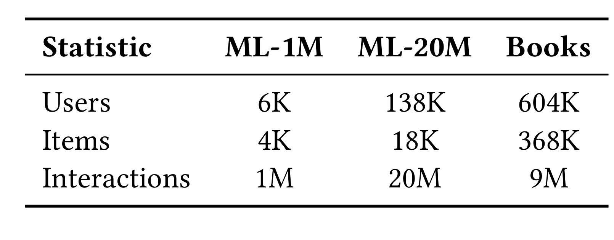
Table 6 给出过滤后的实际规模：ML-1M 有约 6K 用户、4K 物品、1M 交互；ML-20M 有 138K 用户、18K 物品、20M 交互；Books 有 604K 用户、368K 物品、9M 交互。Books 的物品空间远大于 MovieLens，且交互相对稀疏，因而能补充电影数据之外的长尾条件。但三者都被转为有观测低评分作负例的二分类，并非常见 next-item sampled ranking；所以这里验证的是相同 pointwise 协议下的序列表示能力，不能直接外推到 Recall@K 或生成式检索，也不能与采用不同负采样和切分方式的公开结果横比。尤其 Books 的平均每物品交互远低于 MovieLens，若 ReST 的时间与去噪模块在它上面只取得较小 AUC 优势，可能说明公开短序列配置尚未充分释放工业长历史设计。
3.2 工业与公开基准主结果
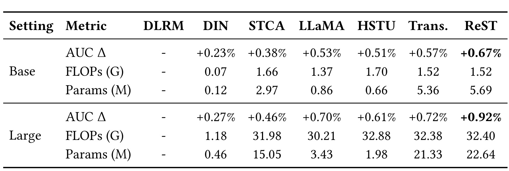
Table 1 中，ReST 在 Base 设置以 1.52G FLOPs、5.69M 参数取得 +0.67% AUC $\Delta$；Large 设置以 32.40G FLOPs、22.64M 参数取得 +0.92%。相近 FLOPs 下，Large LLaMA 为 +0.70%，HSTU 为 +0.61%，参数量接近 ReST 的 Trans. 为 +0.72%，因此 ReST 相对 Trans. 仍多 0.20%。DIN 的计算最小但收益有限，STCA 在 Large 达到 31.98G FLOPs 仍只有 +0.46%，显示单纯扩大 target-to-history cross attention 会让候选侧成本很快变重。表中 ReST 参数略多于 Trans.，不能声称完全参数等价；但 Table 3 的 encoder-only 对照仍保留约 +0.87%，比 LLaMA 高 0.17%，支持主要收益不是参数数量本身。
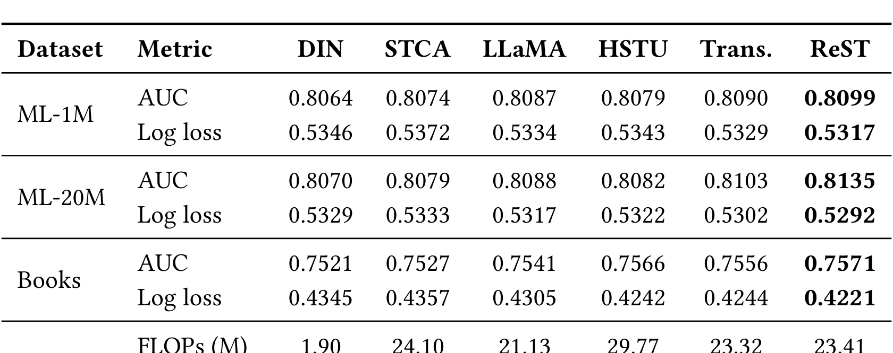
Table 2 中 ReST 在三个数据集上都取得最高 AUC 与最低 log loss：ML-1M 为 0.8099/0.5317，ML-20M 为 0.8135/0.5292，Books 为 0.7571/0.4221。其 23.41M FLOPs 与 Trans. 的 23.32M 接近，AUC 差距在 ML-20M 最明显，为 0.0032；在 ML-1M 与 Books 上优势较小，分别只比次优高 0.0009 与 0.0005。这个结果说明 rec-native 设计能迁移到公开 pointwise 协议，却也表明收益并非所有分布都同样大。表中参数量只有 0.18M，是公开小模型配置，不能与工业 Large 的 22.64M 直接比较，更不能据此推断完整生产模型的公开复现成本。
3.3 长度、深度和宽度的扩展行为
作者先把长度、深度和宽度共同放大，在测试 FLOPs 范围内拟合 $\Delta\mathrm{AUC}(F)=aF^b$。ReST 的 $(a,b)=(0.626,0.101)$、log-space $R^2=0.991$；LLaMA 为 $(0.491,0.090)$、$R^2=0.935$；HSTU 为 $(0.461,0.088)$、$R^2=0.924$。
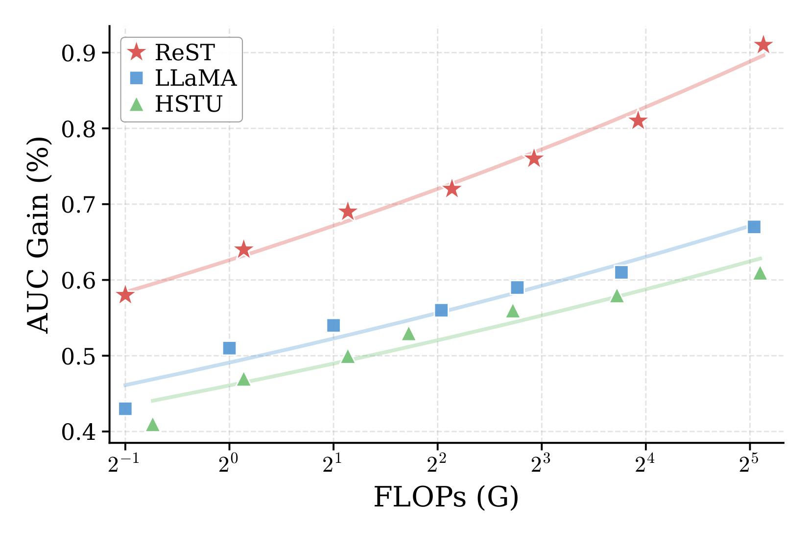
Figure 3 的横轴是序列组件 FLOPs，纵轴是相对生产 DLRM 的 AUC Gain。红色 ReST 在整个观测区间位于 LLaMA 与 HSTU 上方，而且斜率没有像两条基线那样明显变平。这只是一段有限计算区间内的经验拟合，不是可外推到任意规模的普适 scaling law；但较高的 $a$、$b$ 和拟合度共同说明，当前预算内追加序列计算更容易被 ReST 转化为精度。尤其 HSTU 在判别式任务中弱于 LLaMA，提示生成式推荐中的成功 block 不能自动迁移到工业 CVR，监督结构与候选交互方式会改变 scaling 排序。
逐轴实验把混合扩展拆开。长度从 100 增至 16K 时，无辅助序列 CVR 的 LLaMA 几乎不再获益；加入辅助目标后三种模型都改善，ReST 在整个区间领先，并在观测长度范围获得约 0.4% 的额外 AUC lift。深度实验中 ReST 的增益从 +0.59% 升到 +0.76%，LLaMA 在 8 层后、HSTU 在 16 层后更早饱和。宽度从 128 增至 512 时，ReST 从 +0.67% 升到 +0.80%，两条基线约在 256 后变平。
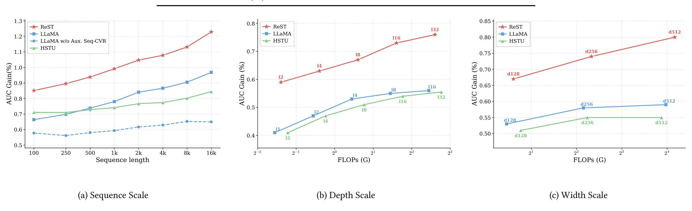
Figure 4(a) 最值得注意的不只是 ReST 红线最高，而是虚线 “LLaMA w/o Aux. Seq-CVR” 随长度增长几乎横置，它把“上下文更长”与“模型真正用到更远历史”清楚地区分开；只有监督先进入序列栈，长度才成为有效容量。(b) 每个点旁标注层数，ReST 在 2、4、8、16、32 层持续上升，而 LLaMA/HSTU 的后段 FLOPs 增加没有同等转化为 AUC。(c) 在 $d=512$ 时，红线仍上升，蓝绿线基本饱和。三图共同支持 DGA、RoTE、SRN 与辅助监督是协同条件；但作者没有公开各轴设置的置信区间和完整重复试验，细小相邻点差异仍需谨慎解释。三轴也没有覆盖候选数和 decoder 深度，说明这里的“可扩展”主要指共享序列侧，不等于候选侧也能无限增大。
3.4 模块消融与噪声鲁棒性
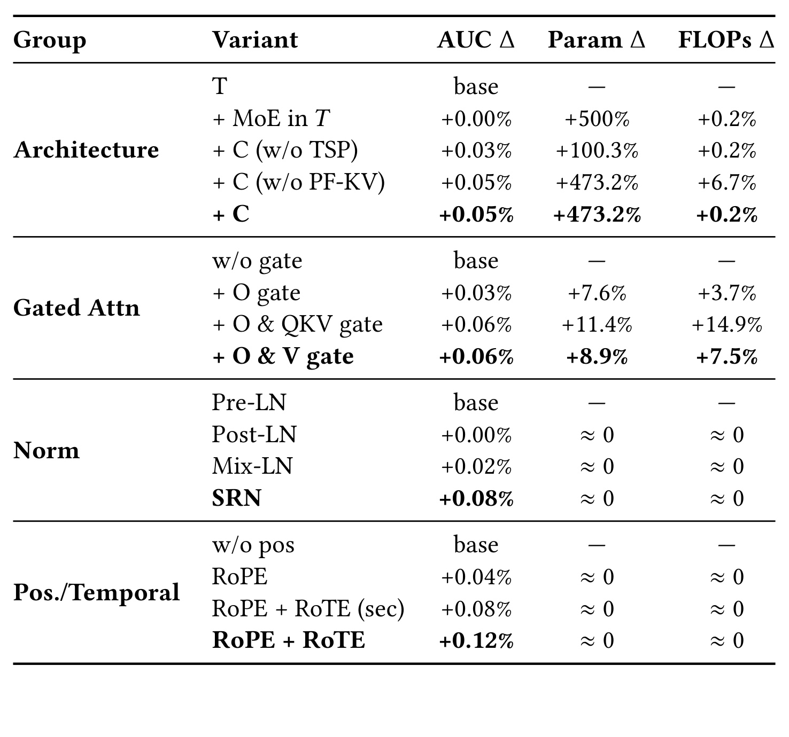
Table 3 把四组设计拆得较清楚。架构组中，给 $T$ 加 MoE 令参数增 500%，AUC 却是 +0.00%，说明盲目增加 encoder 参数并非瓶颈；加入不带 TSP 的 $C$ 为 +0.03%，完整 $C$ 为 +0.05%，PF-KV 则把同样 +0.05% 下的 FLOPs 增量从 6.7% 降到 0.2%。门控组中，仅 output gate 为 +0.03%；Q/K/V 全门控与 O+V 都为 +0.06%，后者用 7.5% 而非 14.9% FLOPs 达成。16 层归一化组里 Post-LN 无增益、Mix-LN +0.02%、SRN +0.08%，支持小残差缩放对深层稀疏监督的重要性。位置/时间组从无位置到 RoPE 为 +0.04%，再加单秒粒度 RoTE 为 +0.08%，多粒度 RoTE 达 +0.12%；由于所有变体已有相同 delta-time token feature，这个增益更能归因于时间直接进入 attention geometry。
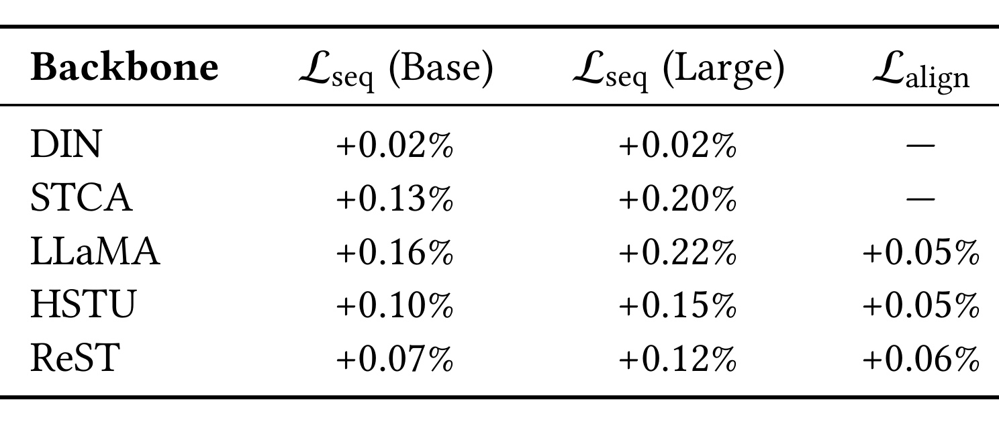
Table 4 显示 $\mathcal L_{seq}$ 不是 ReST 专属技巧：DIN、STCA、LLaMA、HSTU、ReST 都受益，而且 Large 的提升普遍高于 Base。LLaMA 从 Base 的 +0.16% 增到 Large 的 +0.22%，STCA 从 +0.13% 到 +0.20%，符合模型越大越需要直接序列监督的判断。ReST 为 +0.07%/+0.12%，边际小于 LLaMA，说明其编码器本身已部分缓解信号问题，但并未消除 starvation。$\mathcal L_{align}$ 在 LLaMA/HSTU/ReST 上分别再加 0.05%/0.05%/0.06%，且这些头推理时移除，展示了训练成本与服务成本分离的优势；表中没有对齐温度和负配对策略消融，复现时仍需把它们当敏感超参。
附录通过向行为 token 注入不同等级的高斯噪声，对比标准 attention、仅 output gate 和 DGA：
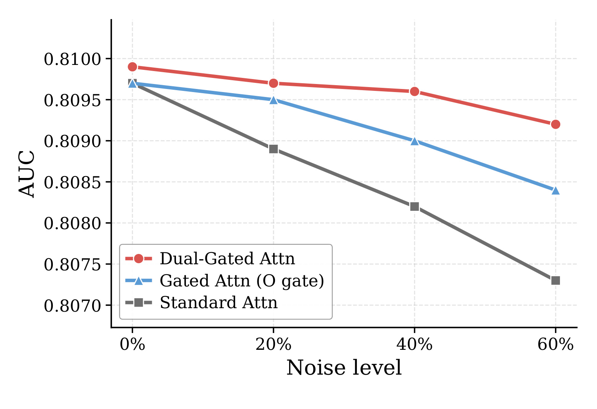
Figure 5 横轴从 0% 增至 60% 噪声，纵轴为 AUC。三种方法从相近起点出发，标准 attention 的灰线下降最快，到 60% 约为 0.8073；仅 output gate 的蓝线降到约 0.8084；DGA 红线仍约为 0.8092。差距随噪声比例扩大，符合 value gate 在聚合前阻断污染、output gate 在聚合后调节上下文的机制。0% 时三者并非完全同一点，表明门控本身也改变正常数据拟合；因此应比较随噪声增长的退化斜率，而不是把最终绝对差全部归为去噪收益。该实验更像受控压力测试，而不是真实误触分布：高斯扰动并不等价于曝光偏差、兴趣漂移或恶意行为，因此能证明 DGA 对特征污染更稳健，却不能证明它已解决所有隐式反馈噪声。
3.5 共享前缀效率与线上 A/B
在已有 fused attention/GEMM、混合精度和去 padding 的强训练管线之上，ULT 把端到端训练吞吐提升 5.8 倍；这使收益更可能来自同用户重叠前缀复用，而非简单的底层 kernel 更换。服务侧共享前缀最多把序列组件每请求推理成本降低 20 倍，因为 $T$ 只执行一次、$C$ 才按候选重复。论文没有披露候选数分布、硬件、缓存占用和跨请求复用细节，因此 5.8 倍与 20 倍应视为本文系统条件下的结果，不是任意线上栈都能直接复制的常数。
线上实验持续一周，在 TikTok Shop Ads 随机分流，治疗组占生产流量 20%；控制组是强生产 DLRM，治疗组只替换序列组件为满足 50 ms P99 的 ReST 配置。监控包括 streaming AUC、端到端 P99 和其他生产 guardrails，主要业务指标是 Advertiser Value（Advv）。
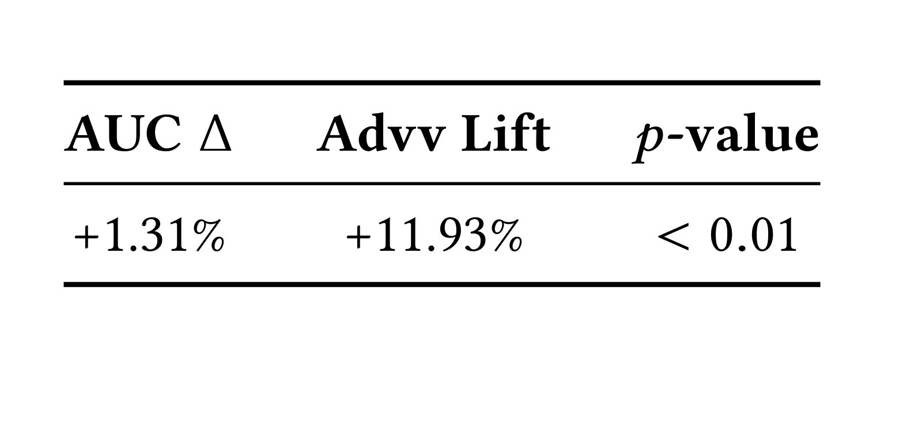
Table 5 报告 online AUC +1.31%、Advv +11.93%，$p<0.01$，并称其余 guardrails 满足要求，随后已全量部署。该表证明 ReST 的离线收益至少在这次生产试验中转化为显著业务效果，而且没有突破 50 ms P99 预算；这是论文相对纯公开 benchmark 工作最有价值的证据。但线上 AUC 的 +1.31% 与离线表的相对 AUC $\Delta$ 未明确采用完全相同统计口径，不能把两者直接相减解释上线损耗。Advv 又是平台内部、与收入相关的指标，正文没有给出精确定义、方差、绝对基数或分群效果，11.93% 不能与其他广告平台收入指标横比。A/B 只有一周，季节性、预算迁移、广告主侧反馈与长期校准仍未被表中三列覆盖。
4. 总结
4.1 我的判断与工程启发
ReST 最有说服力的地方，是把“推荐序列 scaling”拆成三个互相依赖的问题：行为 token 的统计质量、稀疏判别监督的优化路径，以及一对多候选打分的计算非对称。DGA、RoTE、SRN 单看都不是极复杂的新算子，真正的贡献在于它们与 $T/C$ 分界、辅助损失和共享前缀系统组成闭环。消融也给出一个实用优先级：先确保序列分支收到直接监督并建立用户级复用边界，再扩大序列长度和深度；否则 MoE 参数或更长上下文可能只是昂贵的空容量。
对工业排序实现，值得迁移的不是所有模块一次上线，而是沿证据链逐步验证。第一步监控 encoder 梯度、长历史增量和不同时间跨度分群，确认是否存在 starvation；第二步用 O+V gate 与多粒度时间 head 做小范围离线消融；第三步把 candidate-independent computation 从图结构上隔离，评估真实候选数下的 P50/P99、显存和吞吐；最后才以稳定残差扩大深度。对大模型系统也有类比价值：当一份长上下文要服务许多 query 时，重型共享编码与轻型 query-specific decode 可能比整栈重复 prefill 更合理，但推荐的判别式监督和候选协议不能直接套回自回归生成。
4.2 局限、风险与后续跟进
本文至少有四项边界。第一，最强证据来自私有 TikTok Shop Ads，数据分布、特征、绝对 AUC 和模型配置未公开，外部只能在小型 pointwise 基准复核方向，不能完整复现线上量级。第二，50 ms P99 没有绑定硬件、候选规模、batching 与 memory footprint，20 倍序列成本下降也未等价为端到端延迟 20 倍。第三，Advv 的业务定义和长期方差未披露，一周 A/B 无法回答长期广告生态反馈。第四，RoTE 的旋转特征周期性、对齐损失可能传播非序列偏差、DGA 对真实结构化噪声的稳健性，都需要比总体 AUC 更细的诊断。另一个现实风险是 ULT 的 prefix-valid mask 或线上缓存键一旦实现错误，会分别造成未来行为泄漏或用户状态串用，属于高收益同时高敏感的系统环节。
后续建议聚焦三条可验证路线。其一，在公开代码尚未出现时先复现 Table 3 的最小组合：LLaMA-style 序列骨干、$\mathcal L_{seq}$、O+V gate 与 SRN，观察梯度范数和深度饱和是否在自有数据重现。其二，要求后续版本补充硬件、候选数、缓存生命周期、端到端延迟分位和显存，把“序列组件成本下降”与“整条排名链路收益”分开。其三，做真实噪声与时间漂移测试，包括误触、曝光偏差、突发兴趣、跨季度回访，并检查不同 $\tau_h$ head 是否学到互补而非冗余模式。若官方代码或更完整线上附录发布，还应优先核验 ULT mask、PF-KV 的数值实现，以及 Advv 提升在新老用户、长短历史和候选规模上的稳定性。